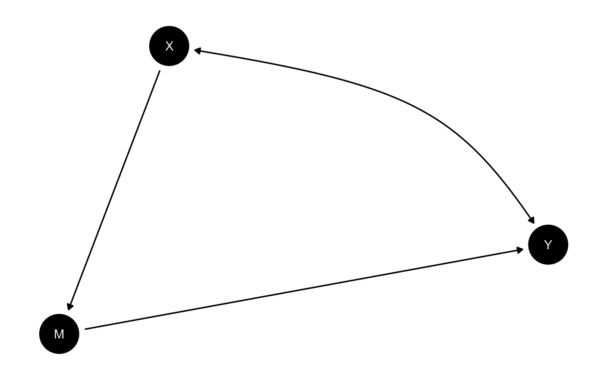

Here is an example of a model in which X causes
M and M causes Y. There is, in
addition, unobservable confounding between X and
Y. This is an example of a model in which you might use
information on M to figure out whether X
caused Y making use of the “front door criterion.”
The DAG is defined using dagitty syntax like this:
model <- make_model("X -> M -> Y <-> X")We might set priors thus:
model <- set_priors(model, distribution = "jeffreys")
#> No specific parameters to alter values for specified. Altering all parameters.You can plot the dag thus.
plot(model)
Updating is done like this:
# Lets imagine highly correlated data; here an effect of .9 at each step
data <- fabricate(N = 5000,
X = rep(0:1, N/2),
M = rbinom(N, 1, .05 + .9*X),
Y = rbinom(N, 1, .05 + .9*M))
# Updating
model <- model |> update_model(data, refresh = 0)Finally you can calculate an estimand of interest like this:
query_model(
model = model,
using = c("priors", "posteriors"),
query = "Y[X=1] - Y[X=0]",
) |>
kable(digits = 2)| query | given | using | case_level | mean | sd | cred.low | cred.high |
|---|---|---|---|---|---|---|---|
| Y[X=1] - Y[X=0] | - | priors | FALSE | 0.01 | 0.15 | -0.32 | 0.36 |
| Y[X=1] - Y[X=0] | - | posteriors | FALSE | 0.80 | 0.01 | 0.77 | 0.82 |
This uses the posterior distribution and the model to assess the average treatment effect estimand.
Let’s compare now with the case where you do not have data on
M:
model |>
update_model(data |> dplyr::select(X, Y), refresh = 0) |>
query_model(
using = c("priors", "posteriors"),
query = "Y[X=1] - Y[X=0]") |>
kable(digits = 2)| query | given | using | case_level | mean | sd | cred.low | cred.high |
|---|---|---|---|---|---|---|---|
| Y[X=1] - Y[X=0] | - | priors | FALSE | 0.00 | 0.14 | -0.32 | 0.31 |
| Y[X=1] - Y[X=0] | - | posteriors | FALSE | 0.09 | 0.16 | -0.03 | 0.57 |
Here we update much less and are (relatively) much less certain in
our beliefs precisely because we are aware of the confounded related
between X and Y, without having the data on
M we could use to address it.